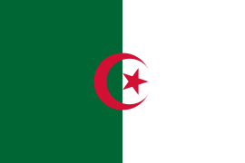
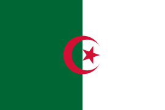

Welcome To Camello Loco
Tu blog de viajes para descubrir Iberia y el Maghreb.
Desierto del Sahara:

Adéntrese en un viaje por el desierto mas grande del mundo en una caravana y pasa la noche en el desierto junto a una tribu bereber quienes te brindaran su comida tradicional, su música y una noche bajo el cielo mas estrellado del mundo.
Granada

Descubra una de las ciudades mas lindas de toda España caminando por sus hermosas calles, recorriendo los pasillos del Albahicín y viendo la Alhambra, también disfrutando de su deliciosa gastronomía.
Marrakech

Esta ciudad va a romper todas tus expectativas, una vez que entres a La Medina vas a sentir mil sensaciones nuevas, historia y cultura marroquí en su máximo esplendor.
Lisboa
Ciudad de Fado, de playa, de buenas comidas y de hermosos paisajes, la hospitalidad de los lusitanos te enamorará de esta ciudad.